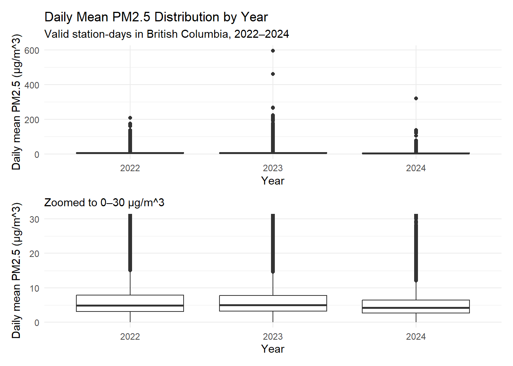
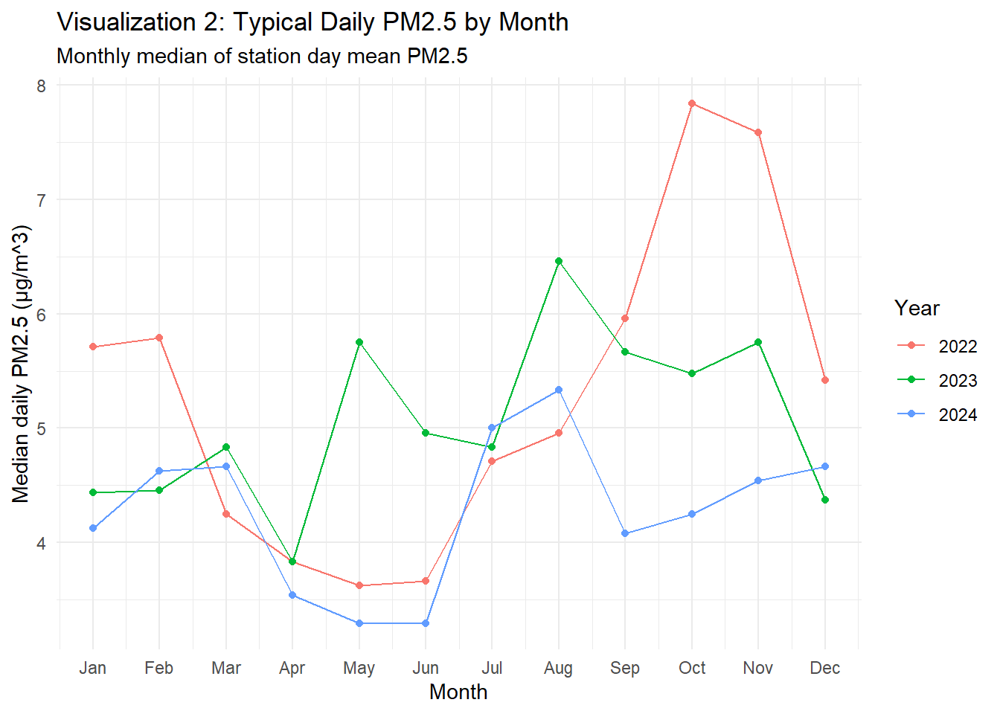
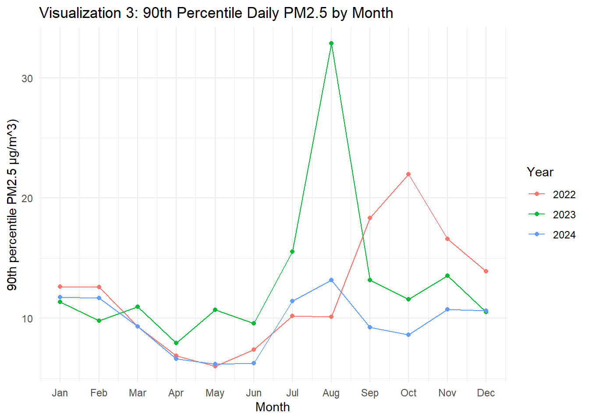
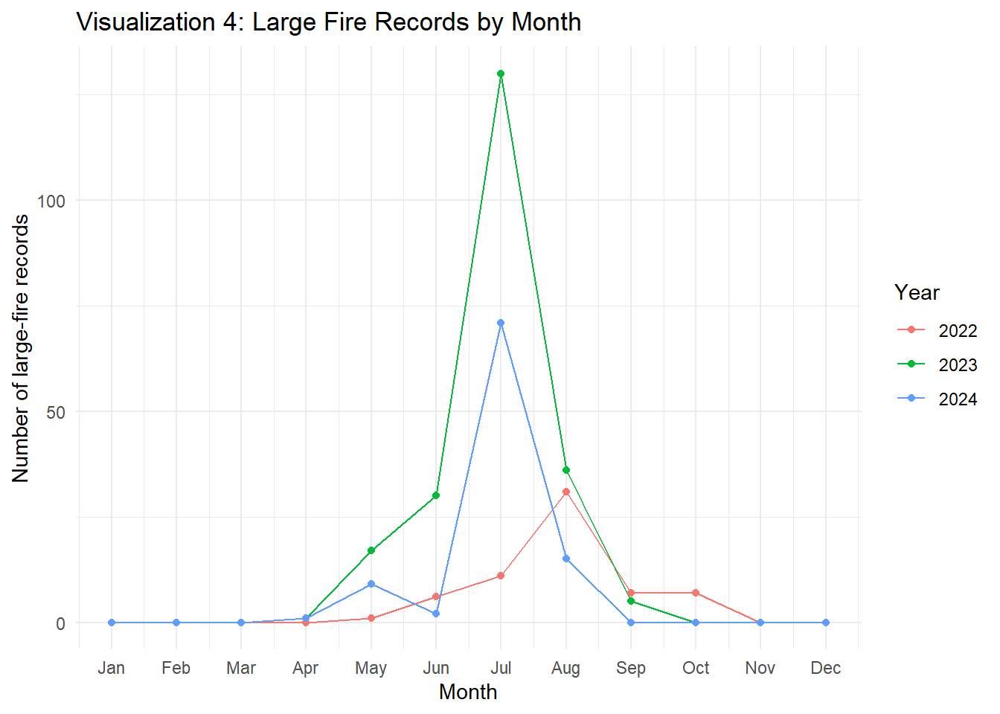
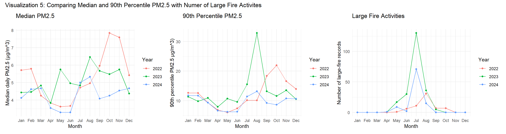
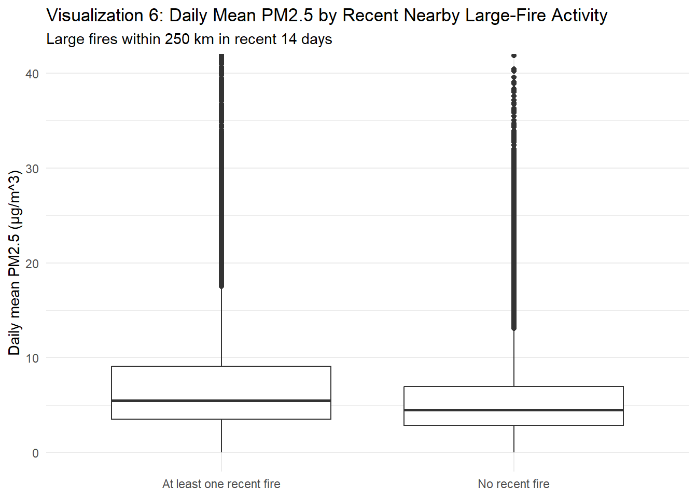
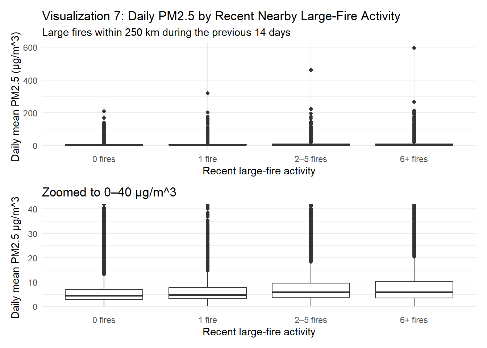
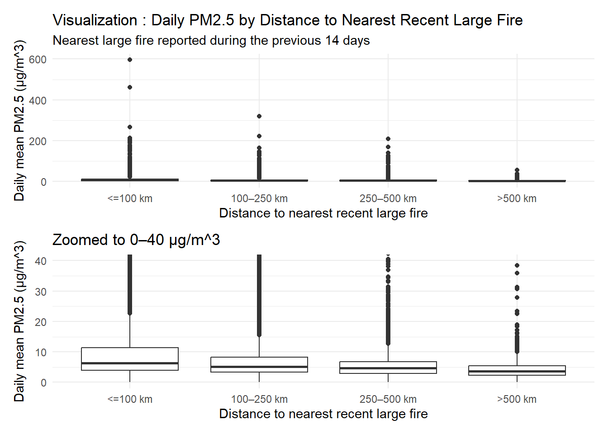

Code
# load packages
library(tidyverse)
library(patchwork)Eplores daily PM2.5 patterns in British Columbia from 2022–2024 and their relationship with recent large-fire activity.
# load packages
library(tidyverse)
library(patchwork)# load processed analysis data
analysis_daily <- read_csv(
"data/processed/analysis_daily.csv",
show_col_types = FALSE)
# filter to only valid ones
analysis_valid <- analysis_daily |> filter(valid_day)
# load large fires data
large_fires_clean <- read_csv(
"data/processed/large_fires_clean.csv",
show_col_types = FALSE
)
case_study_fires <- read_csv(
"data/processed/case_study_fires.csv",
show_col_types = FALSE
)The table below summarizes the most important variables used throughout the data-building and analysis workflow.
| Air Quality | Fire | Relationship |
|---|---|---|
| Station_Date | Fire_ID | days_since_fire |
| Year | Fire_Year | Distance_km |
| Month | Report_Date | fire_count_100km_{7/14/30}d |
| NAPS_ID | Fire_Date | fire_count_250km_{7/14/30}d |
| Station_Name | Fire_Latitude | fire_area_250km_{7/14/30}d |
| Latitude | Fire_Longitude | nearest_fire_km_{7/14/30}d |
| Longitude | Size_Ha | recent_fire_250km_14d |
| mean_pm25 | Cause | fire_activity_250km_14d |
| max_pm25 | Response | fire_distance_group |
| hours_observed | ||
| valid_day | ||
| Month_Name |
analysis_valid |>
group_by(Year) |>
summarise(
station_days = n(),
mean_daily_pm25 = mean(mean_pm25),
median_daily_pm25 = median(mean_pm25),
q75_daily_pm25 = quantile(mean_pm25, 0.75),
max_daily_pm25 = max(mean_pm25),
.groups = "drop"
)# A tibble: 3 × 6
Year station_days mean_daily_pm25 median_daily_pm25 q75_daily_pm25
<dbl> <int> <dbl> <dbl> <dbl>
1 2022 19440 6.57 4.87 7.88
2 2023 18902 7.29 5.04 7.79
3 2024 19663 5.28 4.22 6.42
# ℹ 1 more variable: max_daily_pm25 <dbl>2023 has the highest mean, the highest median by a slight amount, and a slightly lower 75th percentile. The mean of 7.29 is very high compared 6.57 of 2022 and 5.2 of 2024. Thissuggests the upper tail of 2023 contains really high PM2.5 like in Kamloops and Fort St. John.
analysis_valid |>
group_by(Year) |>
summarise(
median_pm25 = median(mean_pm25),
p75_pm25 = quantile(mean_pm25, 0.75),
p90_pm25 = quantile(mean_pm25, 0.90),
p95_pm25 = quantile(mean_pm25, 0.95),
p99_pm25 = quantile(mean_pm25, 0.99),
max_pm25 = max(mean_pm25),
.groups = "drop"
)# A tibble: 3 × 7
Year median_pm25 p75_pm25 p90_pm25 p95_pm25 p99_pm25 max_pm25
<dbl> <dbl> <dbl> <dbl> <dbl> <dbl> <dbl>
1 2022 4.87 7.88 12.5 16.2 30.4 209.
2 2023 5.04 7.79 12.3 17.7 49.8 596.
3 2024 4.22 6.42 9.67 12.6 21.9 319.Through the 90th percentile, 2022 and 2023 have nearly identical values but then 2023 become larger from the 95th. Then it has a very high maximum of 596 compared to ones in 2022 and 2024, which are 209 and 319 respectively.
This supports the previous hypothesis that 2023’s higher yearly mean is driven by very high upper tail values.
pm25_boxplot <- analysis_valid |>
ggplot(aes(x = factor(Year), y = mean_pm25)) +
geom_boxplot() +
labs(
title = "Daily Mean PM2.5 Distribution by Year",
subtitle = "Valid station-days in British Columbia, 2022–2024",
x = "Year",
y = "Daily mean PM2.5 (µg/m^3)"
) +
theme_minimal()
pm25_boxplot_zoomed <- analysis_valid |>
ggplot(aes(x = factor(Year), y = mean_pm25)) +
geom_boxplot() +
coord_cartesian(ylim = c(0, 30)) +
labs(
subtitle = "Zoomed to 0–30 µg/m^3",
x = "Year",
y = "Daily mean PM2.5 (µg/m^3)"
) +
theme_minimal()
pm25_boxplot / pm25_boxplot_zoomed
Daily PM2.5 was right-skewed in all three years; the means were greater than medians. 2023 had the highest mean of daily PM2.5, while its median and 75th percentile were relatively similar to 2022. This suggests that some station days have unusually high concentrations, leading to the increase in the 2023 mean.
By examination of wildfires near the high values, we may find a correlation.
analysis_valid <- analysis_valid |>
mutate(Month_Name = factor(month.abb[Month], levels = month.abb))Calculate monthly summaries separately for each year.
monthly_pm25 <- analysis_valid |>
group_by(Year, Month, Month_Name) |>
summarise(
station_days = n(),
monthly_mean_pm25 = mean(mean_pm25),
monthly_median_pm25 = median(mean_pm25),
monthly_p90_pm25 = quantile(mean_pm25, 0.90),
monthly_p95_pm25 = quantile(mean_pm25, 0.95),
monthly_max_pm25 = max(mean_pm25),
.groups = "drop"
)
monthly_pm25# A tibble: 36 × 9
Year Month Month_Name station_days monthly_mean_pm25 monthly_median_pm25
<dbl> <dbl> <fct> <int> <dbl> <dbl>
1 2022 1 Jan 1715 6.86 5.71
2 2022 2 Feb 1558 6.76 5.79
3 2022 3 Mar 1714 5.08 4.25
4 2022 4 Apr 1616 4.19 3.83
5 2022 5 May 1656 3.74 3.62
6 2022 6 Jun 1609 4.06 3.67
7 2022 7 Jul 1596 5.49 4.71
8 2022 8 Aug 1603 5.55 4.96
9 2022 9 Sep 1549 9.35 5.96
10 2022 10 Oct 1590 12.2 7.83
# ℹ 26 more rows
# ℹ 3 more variables: monthly_p90_pm25 <dbl>, monthly_p95_pm25 <dbl>,
# monthly_max_pm25 <dbl>monthly_median_plot <- monthly_pm25 |>
ggplot(aes(x = Month, y = monthly_median_pm25, group = factor(Year), color = factor(Year))) +
geom_line() +
geom_point() +
scale_x_continuous(breaks = 1:12, labels = month.abb) +
labs(
title = "Visualization 2: Typical Daily PM2.5 by Month",
subtitle = "Monthly median of station day mean PM2.5",
x = "Month",
y = "Median daily PM2.5 (µg/m^3)",
color = "Year"
) +
theme_minimal()
monthly_median_plot
Typical daily PM2.5 showed seasonal differences that varied by year. In all three years, the concentration was lower during spring. In 2022, the median increased sharply in the fall and peaked around October-November. In 2023, the line rose the most in late summer with August having the highest median. Compared to other two years, 2024 generally remained low increasing around the same point as 2023, late Summer, and peaking in August.
Overall, every year has a particular season that is more concentrated than others, but that season is not identical every year. 2022 was around Aug-Nov while 2023 and 2024 were around Jul-Aug.
monthly_p90_plot <- monthly_pm25 |>
ggplot(aes(x = Month, y = monthly_p90_pm25, group = factor(Year), color = factor(Year))) +
geom_line() +
geom_point() +
scale_x_continuous(breaks = 1:12, labels = month.abb) +
labs(
title = "Visualization 3: 90th Percentile Daily PM2.5 by Month",
x = "Month",
y = "90th percentile PM2.5 µg/m^3)",
color = "Year"
) +
theme_minimal()
monthly_p90_plot
Upper-tail PM2.5 varied dramatically among the three years. August 2023 is very noticeable with its median value at a point far above any values. In 2022, the upper tail was highest during September-November. In 2024, the upper tail was generally lower and more stable.
Seasonal differences are strong in highly concentrated PM2.5 station-days than in typical ones.
monthly_fires <- large_fires_clean |>
filter(!is.na(Fire_Date)) |>
mutate(
Year = lubridate::year(Fire_Date),
Month = lubridate::month(Fire_Date)
) |>
count(Year, Month, name = "large_fire_count") |>
tidyr::complete(
Year = 2022:2024,
Month = 1:12,
fill = list(large_fire_count = 0)
) |>
mutate(Month_Name = factor(month.abb[Month], levels = month.abb))
monthly_fires |> slice_head(n = 10)# A tibble: 10 × 4
Year Month large_fire_count Month_Name
<dbl> <dbl> <int> <fct>
1 2022 1 0 Jan
2 2022 2 0 Feb
3 2022 3 0 Mar
4 2022 4 0 Apr
5 2022 5 1 May
6 2022 6 6 Jun
7 2022 7 11 Jul
8 2022 8 31 Aug
9 2022 9 7 Sep
10 2022 10 7 Oct monthly_fire_plot <- monthly_fires |>
ggplot(aes(x = Month, y = large_fire_count, group = factor(Year), color = factor(Year))) +
geom_line() +
geom_point() +
scale_x_continuous(breaks = 1:12, labels = month.abb) +
labs(
title = "Visualization 4: Large Fire Records by Month",
x = "Month",
y = "Number of large-fire records",
color = "Year"
) +
theme_minimal()
monthly_fire_plot
(
monthly_median_plot + labs(title = "Median PM2.5", subtitle = "") |
monthly_p90_plot + labs(title = "90th Percentile PM2.5") |
monthly_fire_plot + labs(title = "Large Fire Activities")
) +
plot_annotation(
title = "Visualization 5: Comparing Median and 90th Percentile PM2.5 with Numer of Large Fire Activites"
)
Large-fire activity and upper-tail PM2.5 show some temporal overlap. Large-fire records show a sharp rise in July 2023 close to the sharp peak of 90th percentile PM2.5 record in August 2023. However, this relationship is not consistent over years. In 2022, large-fire records show a peak around August while the highest point of upper-tail PM2.5 occurred later in September-November. In 2024, large-fire activity peaked in July but PM2.5 increased moderately in August.
Therefore, monthly fire counts and high-PM2.5 periods have a weak relationship that cannot be fully explained only by the two. We will need to look into geographic and other factors.
fire_count_250km_14danalysis_valid |>
count(fire_count_250km_14d, sort = TRUE)# A tibble: 61 × 2
fire_count_250km_14d n
<dbl> <int>
1 0 45231
2 1 4732
3 2 2011
4 3 1288
5 4 1074
6 5 822
7 6 718
8 7 390
9 9 255
10 10 229
# ℹ 51 more rowsanalysis_valid |>
summarise(
min_fires = min(fire_count_250km_14d),
median_fires = median(fire_count_250km_14d),
mean_fires = mean(fire_count_250km_14d),
max_fires = max(fire_count_250km_14d),
percent_zero = mean(fire_count_250km_14d == 0) * 100
)# A tibble: 1 × 5
min_fires median_fires mean_fires max_fires percent_zero
<dbl> <dbl> <dbl> <dbl> <dbl>
1 0 0 0.937 62 78.078% zero shows this variable, fire_count_250km_14d, is zero-heavy.
The fire-activity will be categorized by recent-fire counts. Each category will get a PM2.5 distribution. This is to answer the question above, do station days experiencing more recent nearby large-fire activity tend to have higher mean daily PM2.5?
analysis_valid |>
filter(fire_count_250km_14d > 0) |>
count(
fire_count_250km_14d
) |>
arrange(fire_count_250km_14d) |>
head()# A tibble: 6 × 2
fire_count_250km_14d n
<dbl> <int>
1 1 4732
2 2 2011
3 3 1288
4 4 1074
5 5 822
6 6 718analysis_valid |>
filter(fire_count_250km_14d > 0) |>
count(
fire_count_250km_14d
) |>
arrange(desc(fire_count_250km_14d)) |>
head()# A tibble: 6 × 2
fire_count_250km_14d n
<dbl> <int>
1 62 5
2 61 4
3 60 1
4 59 1
5 58 5
6 57 4analysis_valid |>
filter(fire_count_250km_14d > 0) |>
summarise(
min = min(fire_count_250km_14d),
q25 = quantile(fire_count_250km_14d, 0.25),
median = median(fire_count_250km_14d),
q75 = quantile(fire_count_250km_14d, 0.75),
p90 = quantile(fire_count_250km_14d, 0.90),
p95 = quantile(fire_count_250km_14d, 0.95),
max = max(fire_count_250km_14d)
)# A tibble: 1 × 7
min q25 median q75 p90 p95 max
<dbl> <dbl> <dbl> <dbl> <dbl> <dbl> <dbl>
1 1 1 2 5 9 13 62# classify if the fire is within 250km in recent 14 days
analysis_valid <- analysis_valid |>
mutate(
recent_fire_250km_14d =
if_else(
fire_count_250km_14d > 0,
"At least one recent fire",
"No recent fire"
)
)
# distribution
analysis_valid |>
group_by(recent_fire_250km_14d) |>
summarise(
station_days = n(),
fire_mean_pm25 = mean(mean_pm25),
fire_median_pm25 = median(mean_pm25),
fire_p90_pm25 = quantile(mean_pm25, 0.90),
fire_p95_pm25 = quantile(mean_pm25, 0.95),
.groups = "drop"
)# A tibble: 2 × 6
recent_fire_250km_14d station_days fire_mean_pm25 fire_median_pm25
<chr> <int> <dbl> <dbl>
1 At least one recent fire 12774 9.03 5.46
2 No recent fire 45231 5.62 4.5
# ℹ 2 more variables: fire_p90_pm25 <dbl>, fire_p95_pm25 <dbl>The four fire count categories will be as following: 0 fires, 1 fire, 2-5 fires, 6+ fires. The biggest populated number after 0 is 1 and 2-5 covers 75% of the data. Then 6+ captures the upper quarter.
recent_near_fire_boxplot <- analysis_valid |>
ggplot(aes(x = recent_fire_250km_14d, y = mean_pm25)) +
geom_boxplot() +
coord_cartesian(ylim = c(0, 40)) +
labs(
title = "Visualization 6: Daily Mean PM2.5 by Recent Nearby Large-Fire Activity",
subtitle = "Large fires within 250 km in recent 14 days",
x = NULL,
y = "Daily mean PM2.5 (µg/m^3)"
) +
theme_minimal()
recent_near_fire_boxplot
Station days with at least one large fire within 250km during the previous 14 days tended to have higher daily PM2.5 than station days none. Though the difference is small around the median, the distribution with fir activity has a larger upper qudrant. This shows that recent near fires may be more associated with high-PM2.5 records than just typical conditions.
analysis_valid <- analysis_valid |>
mutate(
fire_activity_250km_14d = case_when(
fire_count_250km_14d == 0 ~ "0 fires",
fire_count_250km_14d == 1 ~ "1 fire",
fire_count_250km_14d <= 5 ~ "2–5 fires",
fire_count_250km_14d >= 6 ~ "6+ fires"
),
fire_activity_250km_14d = factor(
fire_activity_250km_14d,
levels = c(
"0 fires",
"1 fire",
"2–5 fires",
"6+ fires"
)
)
)
analysis_valid |>
count(fire_activity_250km_14d)# A tibble: 4 × 2
fire_activity_250km_14d n
<fct> <int>
1 0 fires 45231
2 1 fire 4732
3 2–5 fires 5195
4 6+ fires 2847fire_activity_summary <- analysis_valid |>
group_by(fire_activity_250km_14d) |>
summarise(
station_days = n(),
fire_mean_pm25 = mean(mean_pm25),
fire_median_pm25 = median(mean_pm25),
fire_p90_pm25 = quantile(mean_pm25, 0.90),
fire_p95_pm25 = quantile(mean_pm25, 0.95),
.groups = "drop"
)
fire_activity_summaryfire_activity_boxplot_full <- analysis_valid |>
ggplot(aes(x = fire_activity_250km_14d, y = mean_pm25)) +
geom_boxplot() +
labs(
title = "Visualization 7: Daily PM2.5 by Recent Nearby Large-Fire Activity",
subtitle = "Large fires within 250 km during the previous 14 days",
x = "Recent large-fire activity",
y = "Daily mean PM2.5 (µg/m^3)"
) +
theme_minimal()
fire_activity_boxplot_zoomed <- analysis_valid |>
ggplot(aes(x = fire_activity_250km_14d, y = mean_pm25)) +
geom_boxplot() +
coord_cartesian(ylim = c(0, 40)) +
labs(
title = "Zoomed to 0–40 µg/m^3",
x = "Recent large-fire activity",
y = "Daily mean PM2.5 µg/m^3"
) +
theme_minimal()
fire_activity_boxplot_full / fire_activity_boxplot_zoomed
Daily mean PM2.5 generally increased with recent nearby large-fire activity. Mean PM2.5 rose from 5.62 µg/m^3 with no recent fires to 11.3 µg/m^3 with 6+ fires. However, the medians did not increase perfectly across every category. These observations indicate that the relationship is rather driven by high upper-tail PM2.5 data than a shift in the entire distribution.
The data that will be used:
distance_data <- analysis_valid |>
filter(!is.na(nearest_fire_km_14d))distance_data |>
summarise(
min_distance = min(nearest_fire_km_14d),
q25_distance = quantile(nearest_fire_km_14d, 0.25),
median_distance = median(nearest_fire_km_14d),
q75_distance = quantile(nearest_fire_km_14d, 0.75),
p90_distance = quantile(nearest_fire_km_14d, 0.90),
max_distance = max(nearest_fire_km_14d)
)# A tibble: 1 × 6
min_distance q25_distance median_distance q75_distance p90_distance
<dbl> <dbl> <dbl> <dbl> <dbl>
1 1.62 117. 209. 381. 679.
# ℹ 1 more variable: max_distance <dbl>nrow(distance_data)[1] 22151Again, classifying distances: <= 100 km, 100-250 km, 250-500 km, >500 km.
distance_data <- distance_data |>
mutate(
fire_distance_group = case_when(
nearest_fire_km_14d <= 100 ~ "<=100 km",
nearest_fire_km_14d <= 250 ~ "100–250 km",
nearest_fire_km_14d <= 500 ~ "250–500 km",
TRUE ~ ">500 km"
),
fire_distance_group = factor(
fire_distance_group,
levels = c(
"<=100 km",
"100–250 km",
"250–500 km",
">500 km"
)
)
)
distance_data |>
count(fire_distance_group)# A tibble: 4 × 2
fire_distance_group n
<fct> <int>
1 <=100 km 4006
2 100–250 km 8768
3 250–500 km 5993
4 >500 km 3384distance_summary <- distance_data |>
group_by(fire_distance_group) |>
summarise(
station_days = n(),
distance_mean_pm25 = mean(mean_pm25),
distance_median_pm25 = median(mean_pm25),
distance_p90_pm25 = quantile(mean_pm25, 0.90),
distance_p95_pm25 = quantile(mean_pm25, 0.95),
.groups = "drop"
)
distance_summary# A tibble: 4 × 6
fire_distance_group station_days distance_mean_pm25 distance_median_pm25
<fct> <int> <dbl> <dbl>
1 <=100 km 4006 11.8 6.38
2 100–250 km 8768 7.77 5.13
3 250–500 km 5993 5.94 4.62
4 >500 km 3384 4.09 3.62
# ℹ 2 more variables: distance_p90_pm25 <dbl>, distance_p95_pm25 <dbl>Daily PM2.5 decreased as the distance to the nearest fire increased; they have a negative relationship. Mean PM2.5 dclined from appx. 11.8 µg/m^3 when the nearest fire was within 100km to 4.09 µg/m^3 when it was more than 500km away. Median PM2.5 showed the same pattern. This observation shows a clear correlation between closer recent large-fire activity and higher daiily PM2.5, but not causation.
distance_boxplot_full <- distance_data |>
ggplot(aes(x = fire_distance_group, y = mean_pm25)) +
geom_boxplot() +
labs(
title = "Visualization : Daily PM2.5 by Distance to Nearest Recent Large Fire",
subtitle = "Nearest large fire reported during the previous 14 days",
x = "Distance to nearest recent large fire",
y = "Daily mean PM2.5 (µg/m^3)"
) +
theme_minimal()
distance_boxplot_zoomed <- distance_data |>
ggplot(aes(x = fire_distance_group, y = mean_pm25)) +
geom_boxplot() +
coord_cartesian(ylim = c(0, 40)) +
labs(
title = "Zoomed to 0–40 µg/m^3",
x = "Distance to nearest recent large fire",
y = "Daily mean PM2.5 (µg/m^3)"
) +
theme_minimal()
distance_boxplot_full / distance_boxplot_zoomed
Using Kamloops - August 21, 2023 and Fort St. John - May 19, 2023
# check Kamloops - Aug 21, 2023 data
analysis_valid |>
filter(
Station_Date == as.Date("2023-08-21"),
str_detect(Station_Name, "KAMLOOPS")
) |>
select(
Station_Date,
Station_Name,
mean_pm25,
max_pm25,
fire_count_100km_7d,
fire_count_100km_14d,
fire_count_250km_7d,
fire_count_250km_14d,
nearest_fire_km_7d,
nearest_fire_km_14d
)# A tibble: 1 × 10
Station_Date Station_Name mean_pm25 max_pm25 fire_count_100km_7d
<date> <chr> <dbl> <dbl> <dbl>
1 2023-08-21 KAMLOOPS - FEDERAL BUILDI… 596. 982 2
# ℹ 5 more variables: fire_count_100km_14d <dbl>, fire_count_250km_7d <dbl>,
# fire_count_250km_14d <dbl>, nearest_fire_km_7d <dbl>,
# nearest_fire_km_14d <dbl># show the fires within 250km and 14 days
case_study_fires |>
filter(
Station_Date == as.Date("2023-08-21"),
str_detect(Station_Name, "KAMLOOPS")
) |>
arrange(Distance_km) |>
select(
Fire_ID,
Fire_Date,
days_since_fire,
Size_Ha,
Distance_km
)# A tibble: 6 × 5
Fire_ID Fire_Date days_since_fire Size_Ha Distance_km
<chr> <date> <dbl> <dbl> <dbl>
1 BC-2023-2023-K42815 2023-08-18 3 373. 96.0
2 BC-2023-2023-K52767 2023-08-15 6 13970. 98.8
3 BC-2023-2023-K52808 2023-08-17 4 733 103.
4 BC-2023-2023-K72705 2023-08-09 12 1016. 125.
5 BC-2023-2023-K52813 2023-08-18 3 2044. 159.
6 BC-2023-2023-V12722 2023-08-13 8 1518. 187. The station recorded a daily mean PM2.5 of 596 µg/m^3 and an hourly maximum of 982 µg/m^3. Six large fires were located within 250 km of the station in the recent 14 days to date. The nearest was appx. 96 km away, even more two were within 100 km and seven days.
# check Fort St. John - May 19, 2023 data
analysis_valid |>
filter(
Station_Date == as.Date("2023-05-19"),
str_detect(Station_Name, "FORT ST. JOHN")
) |>
select(
Station_Date,
Station_Name,
mean_pm25,
max_pm25,
fire_count_100km_7d,
fire_count_100km_14d,
fire_count_250km_7d,
fire_count_250km_14d,
nearest_fire_km_7d,
nearest_fire_km_14d
)# A tibble: 1 × 10
Station_Date Station_Name mean_pm25 max_pm25 fire_count_100km_7d
<date> <chr> <dbl> <dbl> <dbl>
1 2023-05-19 FORT ST. JOHN - LEARNING … 461 2112 1
# ℹ 5 more variables: fire_count_100km_14d <dbl>, fire_count_250km_7d <dbl>,
# fire_count_250km_14d <dbl>, nearest_fire_km_7d <dbl>,
# nearest_fire_km_14d <dbl># show the fires within 250km and 14 days
case_study_fires |>
filter(
Station_Date == as.Date("2023-05-19"),
str_detect(Station_Name, "FORT ST. JOHN")
) |>
arrange(Distance_km) |>
select(
Fire_ID,
Fire_Date,
days_since_fire,
Size_Ha,
Distance_km
)# A tibble: 4 × 5
Fire_ID Fire_Date days_since_fire Size_Ha Distance_km
<chr> <date> <dbl> <dbl> <dbl>
1 BC-2023-2023-G80223 2023-05-05 14 2947 30.1
2 BC-2023-2023-G80291 2023-05-13 6 29506. 37.3
3 BC-2023-2023-G80280 2023-05-12 7 619072. 168.
4 BC-2023-2023-G90273 2023-05-11 8 42838. 212. The station recorded a daily mean PM2.5 of 461 µg/m^3 and an hourly maximum of 2112 µg/m^3. Four large fires occurred within the 250 km and in 14 day window. The nearest was appx. 30 km away, while two were within 100 km during the previous 14 days.
Overall, both extreme events case studies consistently align with the association we observed about recent-near fires and high PM2.5.